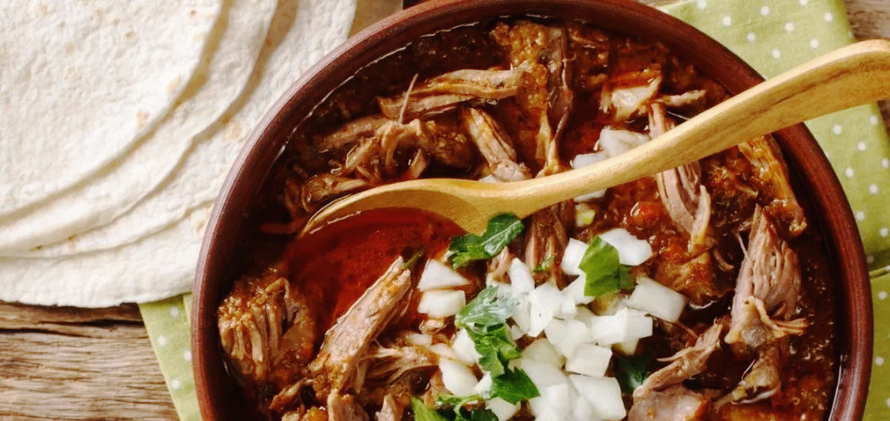

Birria

inspired by @albert_cancook
Dip your corn tortillas into the sauce and fry on vegetable oil, quickly add cheese, meat and some chopped red onion with fresh cilantro to make Birria Tacos!
Ingredients
- 3-4lbs beef chuck roast
- 4 dried chile ancho
- 2 dried chile guajillo
- 8 dried chile de arbol
- 5 cloves of garlic
- 1 white onion
- 1 jalapeno
- 2 bottles of Modelo
- 32oz beef broth
- 3 bay leaves
- 1 tsp ground cumin
- 1 tsp ground cinnamon
- 1 tsp ground clove
- 1/2 tsp thyme
- 2 tbsp salt
- 1 tsp fresh ground black pepper
Instructions
- Prep ingredients
- Dump seeds from chiles
- Cut onion and jalapeno in half
- Simmer chiles in some water for 10 minutes (just enough water to soak them all)
- Char the round part of the onion & jalapeño on an open flame or broiler
- Remove chiles from water
- Add all of your ingredients except the meat & salt to a blender to make the sauce
- Season Beef cheeks with salt and some rub of your choice (we used 1 tsp of each: oregano, cumin, clove, ground ginger)
- In a skillet or on the grill, sear the meat for 90 seconds on each side
- Add meat and pour the sauce all over into your pressure cooker and cook for 1 ½ hours (4-5 hours in slow cooker on high)
- Remove the meat from the sauce and pull the meat
- Enjoy!
Back Home